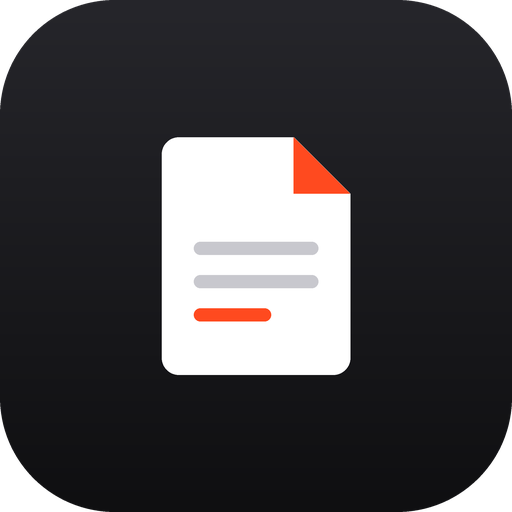

ZenPDF Pro
Every PDF tool — edit, sign, fill, merge, compress, convert — private, offline and on your device. Free.
PrivateFiles never leave your device. Nothing is uploaded.
Works offlineThe apps carry every engine inside — no internet needed.
Smart AutofillFills forms from your profile, a CV or a spreadsheet, and learns from your fixes.
For every countryAdd your own rules, or import a country pack when you need one.